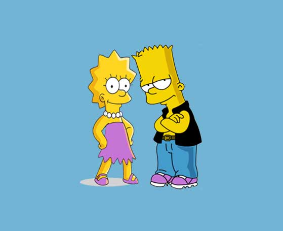

COMP-1950 Redesign!
Introduction
Proto-site
Site Map
Rationale
Client Requirements
Jeff Parker
Requirements
Maintain current site functionality.
Update with JQuery and CSS3 features.
Build a website that is useful, educational, and challenging.
Make the site appealing, and easy to use.
Incorporate quizzes in an online format.
Include an Exercises section with search functionality.
Team Responsibilites
Susan and Karn
Audience Input
Reduce or eliminate scrolling.
Make use of the entire viewport by hiding navigation.
Incorporate visuals for explanation and entertainment.
Susan's Responsibilities
Create COMP-1950 Redesign Presentation website.
Collaborate on BCIT COMP-1950 website.
Karn's Responsibilities
Create BCIT COMP-1950 website.
Collaborate on COMP-1950 Redesign Presentation website.
